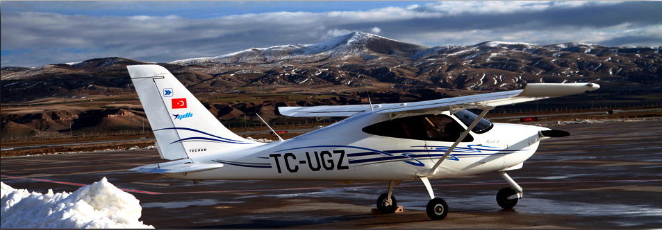
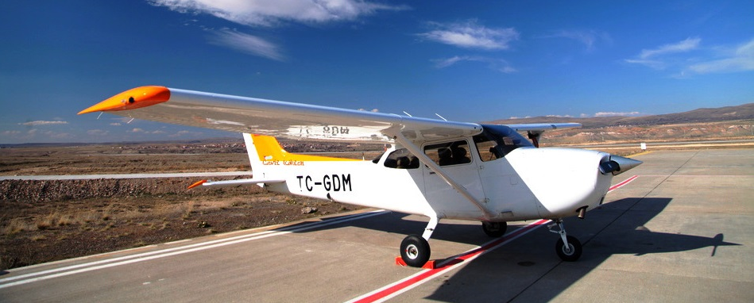
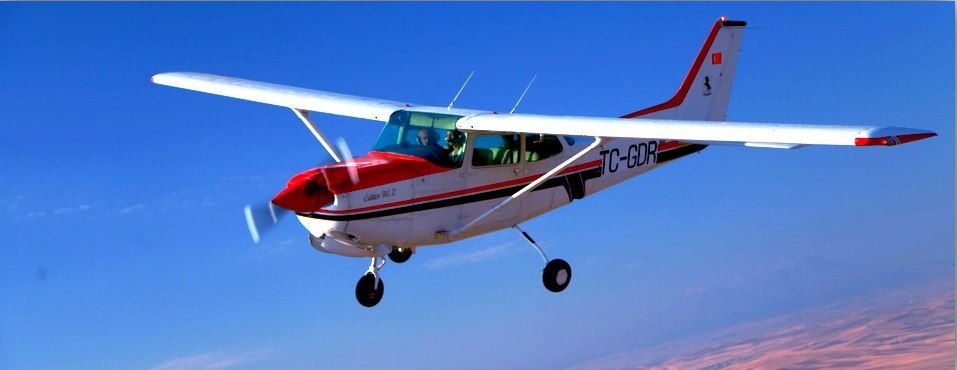
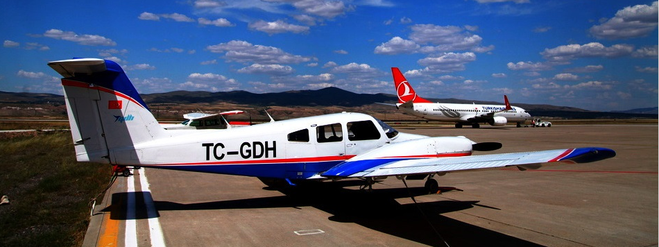
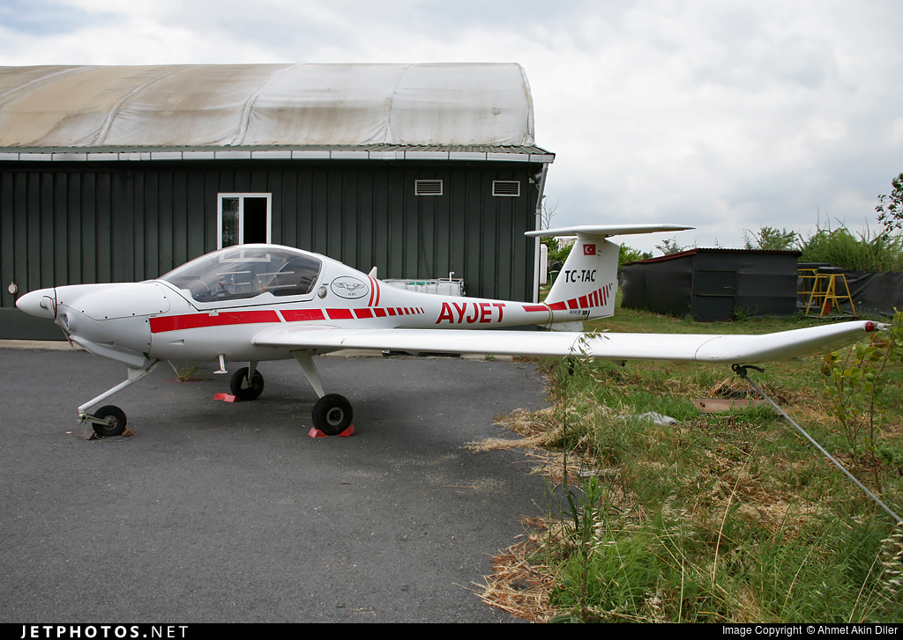
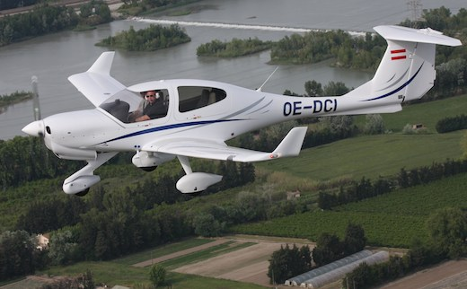
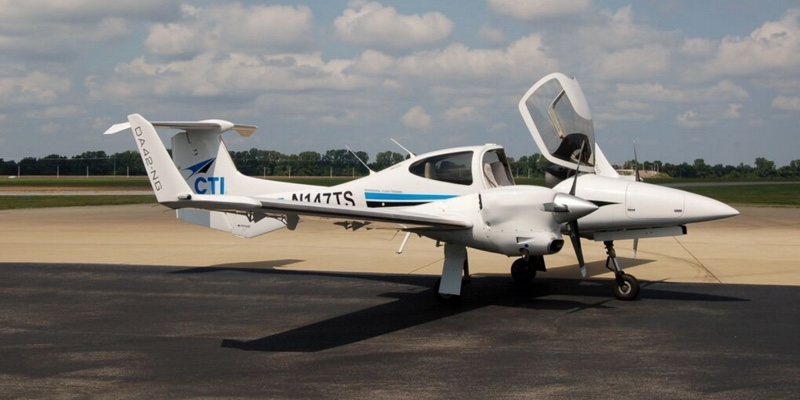
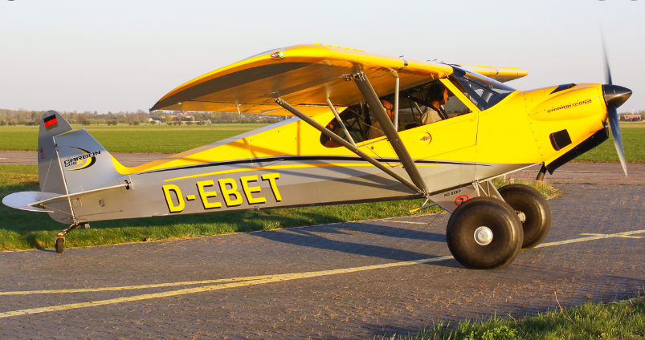
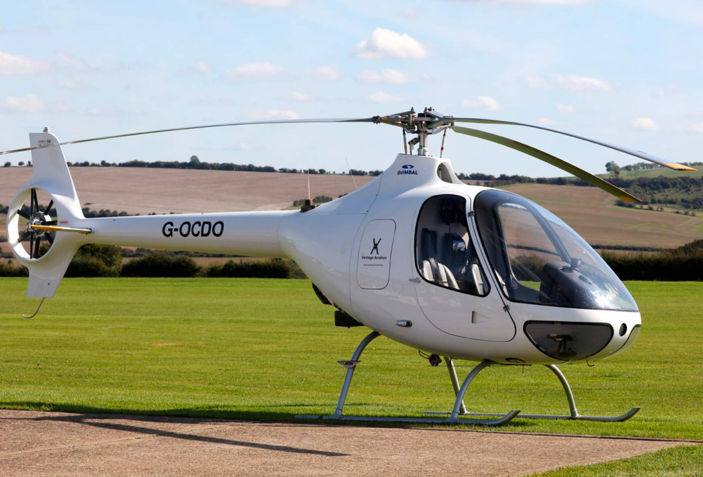

Hava Araçlarımız
Filomuzun bir parçası olan hava araçlarımız periyodik aralıklarla bakımları eksiksiz ve tam bir şekilde yapılmaktadır.

Tecnam P2008JC

Cessna 172S & 172P

Cessna 172 RG

9 mins
Piper PA-44 Seminole

9 mins
DA20 C1

9 mins
DA40 NG

9 mins
DA42 NG

9 mins
CC11 - 160 Carbon Cub SS

9 mins
Guimbal Cabri G2